Main track
Verified-FF
40 pairs
A shared RGB first frame, checked against the recorded state.
Do Video Models Render What the Program Specifies?
PROWBench checks whether generated videos faithfully realize program-specified entity trajectories, camera motion, and interactions, using replayable world states and timestamped events as the reference.
Main track
40 pairs
A shared RGB first frame, checked against the recorded state.
Main track
90 pairs
Appearance and identity binding from text and control signals.
Challenge track
10 cases
Entity reappearance and state persistence across generation windows.
Challenge track
10 cases
Four synchronized cameras, with each view generated independently.
Plus 20 Gunfight cases from 10 recordings for domain-specific evaluation.7 domains · 30 environments · 47 semantic actions · 9 interaction categories.
gISR / gLRA multiply each sample’s behavioral score by its BBox IoU, then average across samples.The suite also measures entity and camera control, visual and temporal quality, multi-view consistency, and long-horizon memory.
The main-track settings use disjoint scenes. Verified-FF supplies the same MiniMax-H3-generated first frame to every method that accepts one, after checking it against the recorded person count, positions, facing, and layout.
Unverified-FF supplies no prescribed appearance reference. Methods whose interface requires an RGB image use unchecked frame 0 of the MiniMax-H3 output for that scene and camera. This can transfer H3’s appearance assignments; the paper also notes potential curation bias from using H3 outputs to select this set.
Coarse 3D, CWM proxy, and Colored-OBB are rendered from the same recorded world state and camera trajectory. The world record retains entity states and events even outside the camera’s field of view.
Video unavailable. Use the video link below.
Video unavailable. Use the video link below.
Video unavailable. Use the video link below.
Press Play to load this example.
40 Verified-FF appearance references
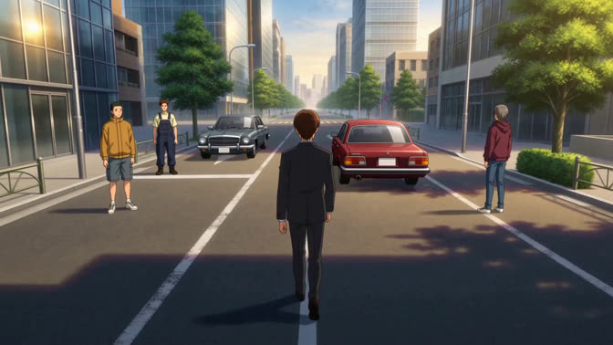
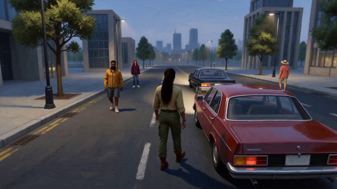
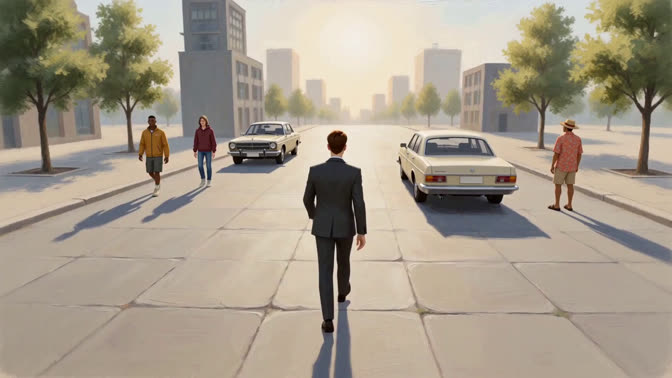
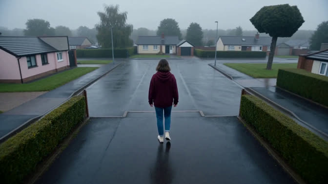
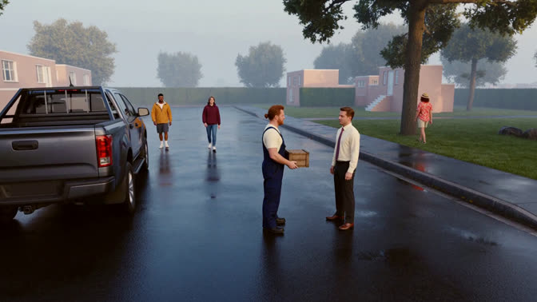
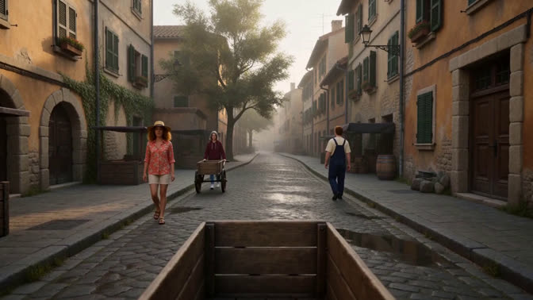
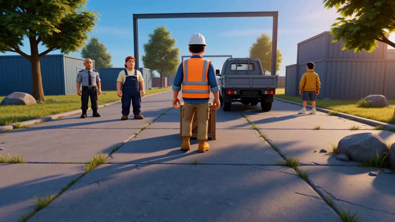
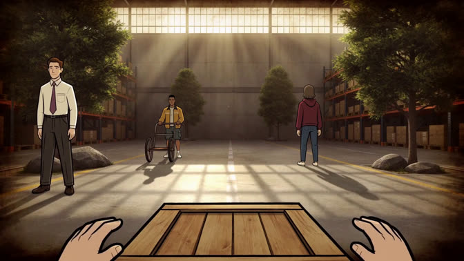
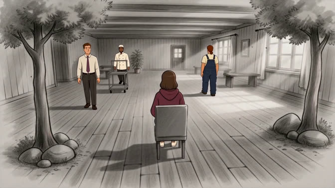
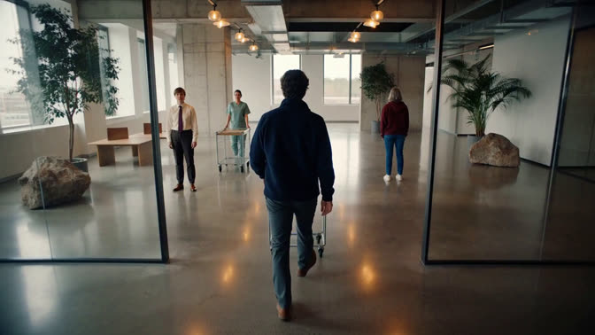
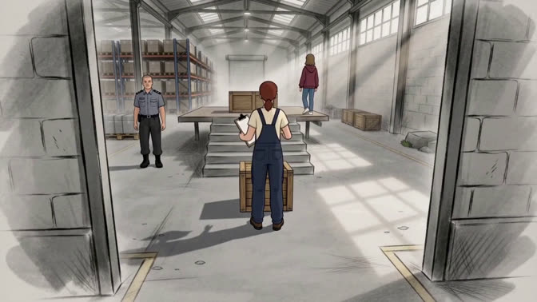
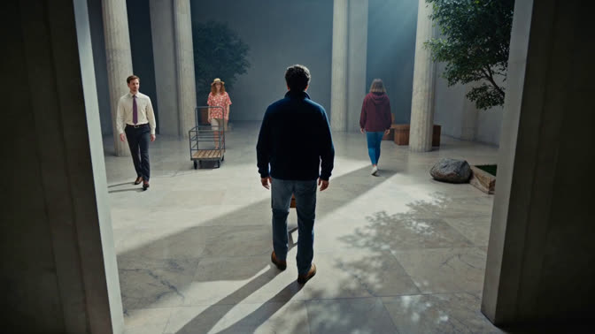
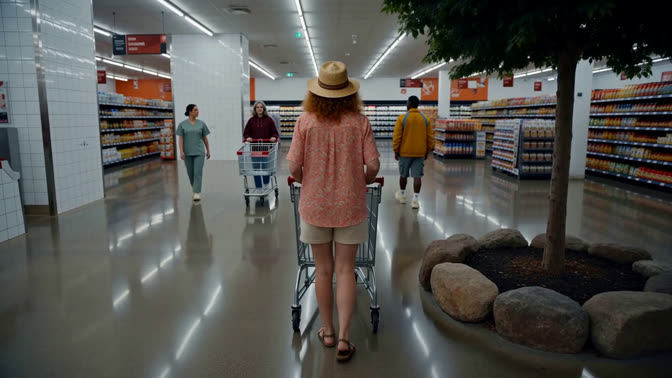
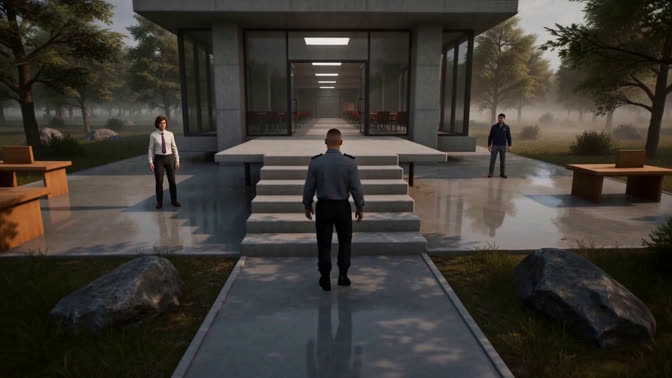
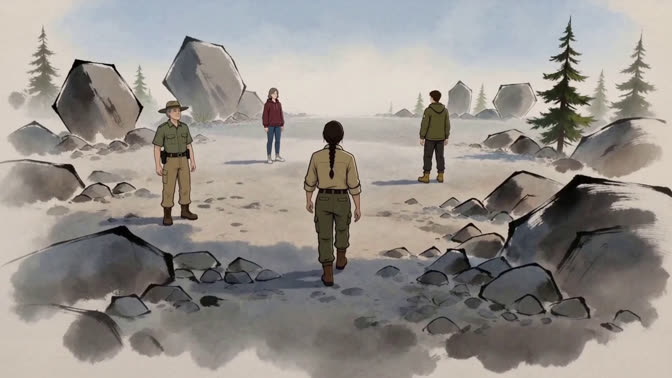
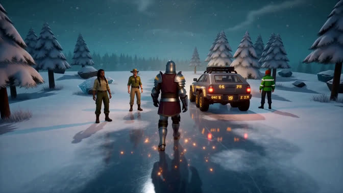
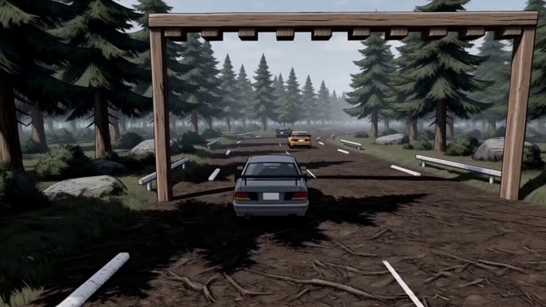
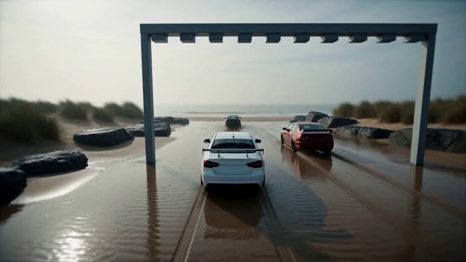
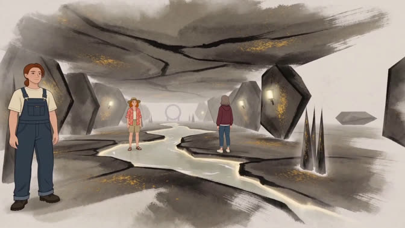
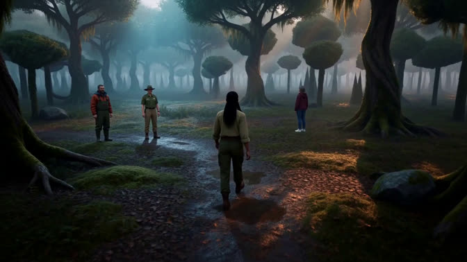
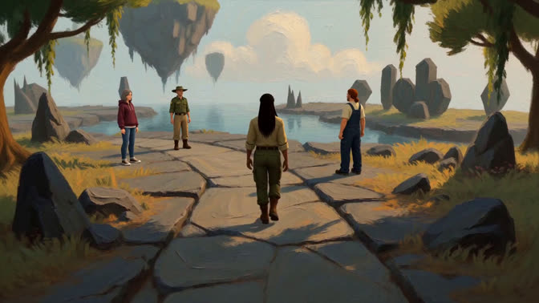
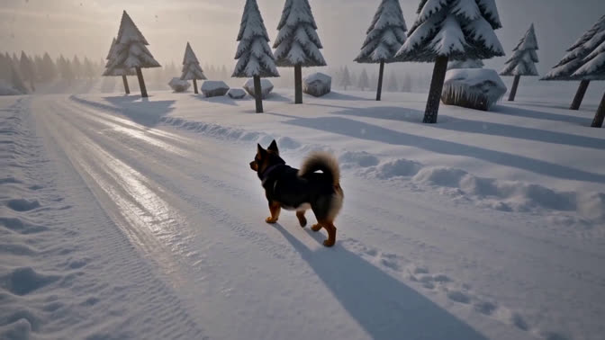
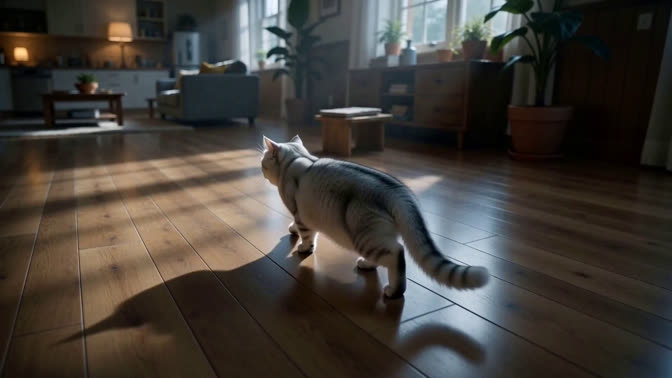
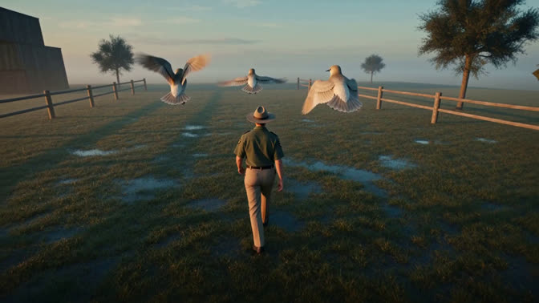
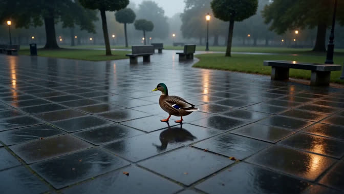
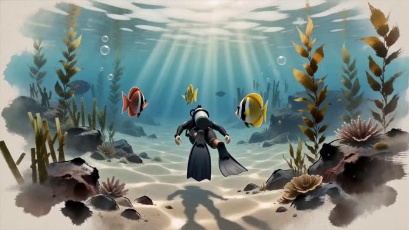
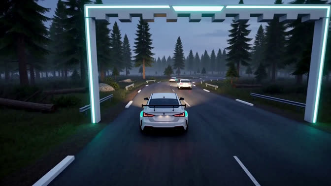
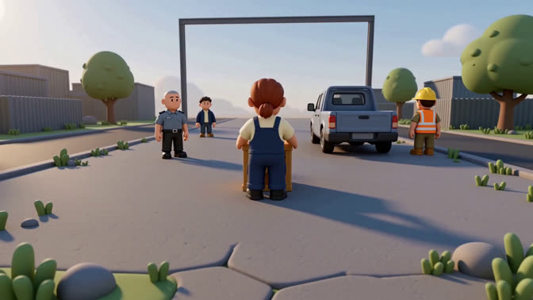
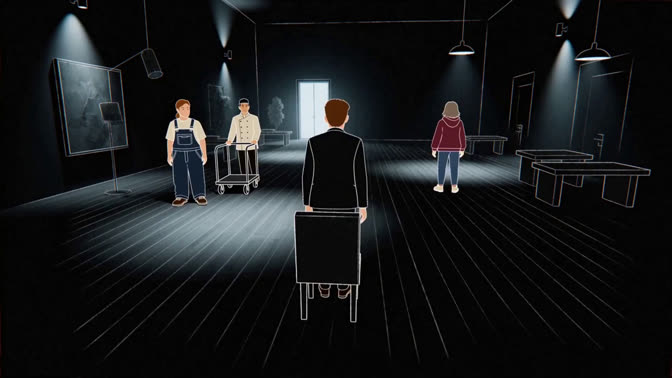
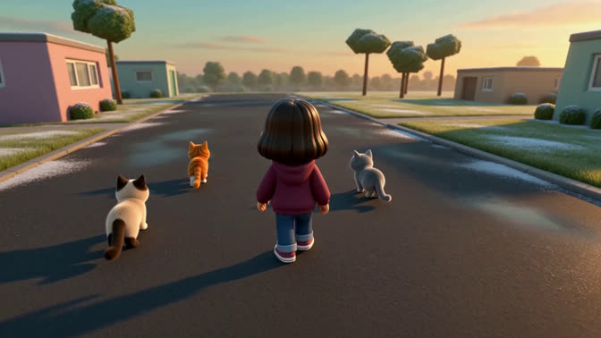
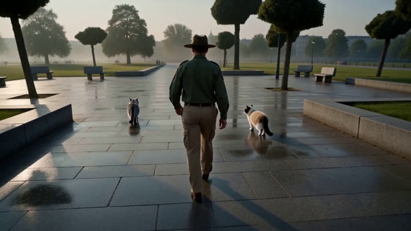
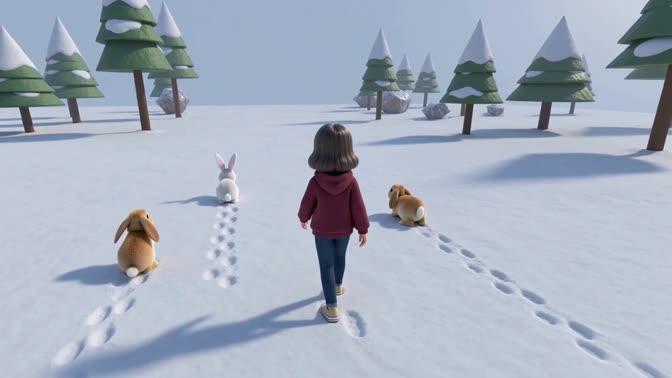
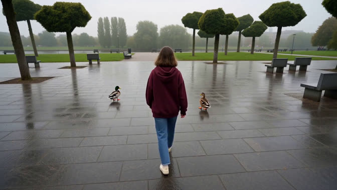
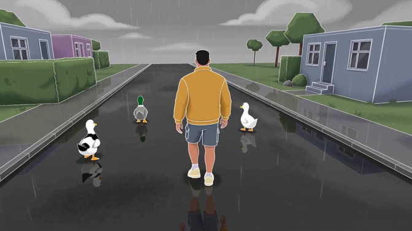
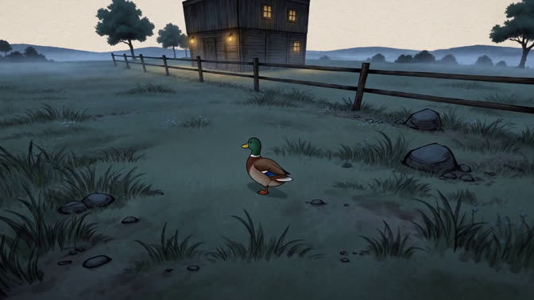
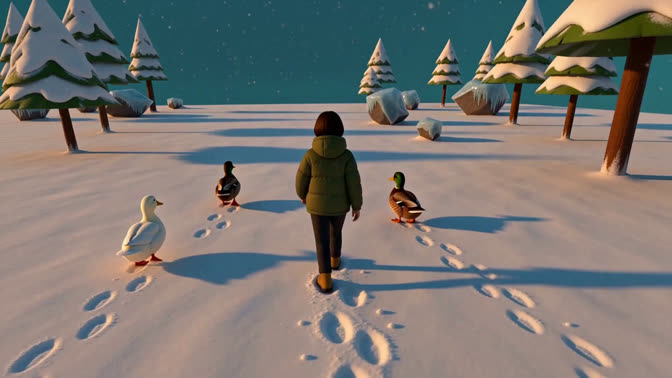
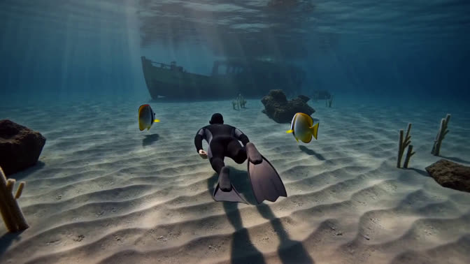